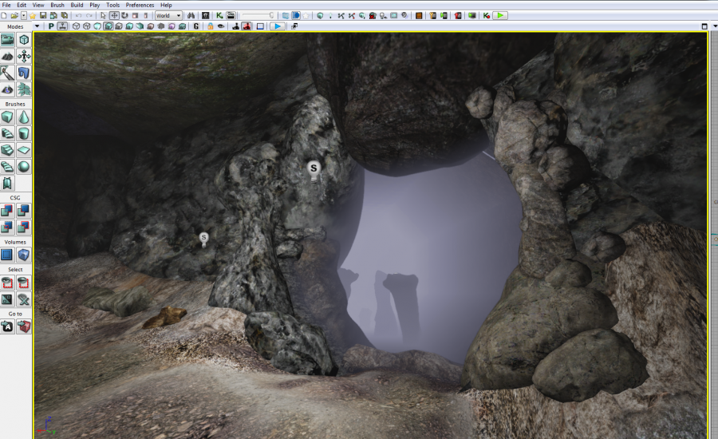

Videos and scenes
Animation for a TV comercial break
- Developed with 3dstudio Max
- One month development
Video trabajo final para la asignatura de Modelado Asistido por computador de Ingeniería Multimedia, Universidad de alicante.
El trabajo consistía en realizar un corto de animación que sirviese como corte publicitario a una pelicula o pograma con una temática a elegir. la temática elegidoa fue de acción y fantasía.
Scene design: Cavern
- Developed in UDK
Video trabajo final para la asignatura de Sistemas multimedia de Ingeniería Multimedia, Universidad de alicante.
Desarrollado con la herramienta UDK, el trabajo consistía en realizar una escena u escenario con una herramienta a elegir, documentando todo el proceso de creación. La mayoría de los assets utilizados para la escena los creé yo mismo. Los enlaces a la planificación y memoría del proyecto se pueden acceder desde los siguientes enlaces; Planificación, Memoría.
El proyecto fue elegido para ser expuesto al público en un evento, así que decidí mejorar y rehacer el proyecto desde cero hasta obtener el resutado que se puede ver en el siguiente video.
Scene design: ApplePub
- Developed with 3dstudio Max
Escena diseñada para la asignatura de Modelado Asistido por computador de Ingeniería multimedia, Universidad de alicante.
El proyecto consistía en diseñar y modelar un pub o bar de temática Apple, como si la propia empresa lo hubiese creado.